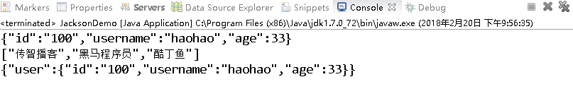

AJAX&JSON
第1章 ajax概述
1.1 什么是ajax
Ajax 即”Asynchronous Javascript And XML”（异步 JavaScript 和 XML），是指一种创建交互式网页应用的网页开发技术。Ajax = 异步 JavaScript 和 XML（标准通用标记语言的子集）。通过在后台与服务器进行少量数据交换，Ajax 可以使网页实现异步更新。这意味着可以在不重新加载整个网页的情况下，对网页的某部分进行更新。传统的网页（不使用 Ajax）如果需要更新内容，必须重载整个网页页面。
1.2 AJAX的应用场景
ajax的应用场景很多，常见的应用场景如下：
1.2.1 检查用户名是否已经被注册
很多站点的注册页面都具备自动检测用户名是否存在的友好提示，该功能整体页面并没有刷新，但仍然可以异步与服务器端进行数据交换，查询用户的输入的用户名是否在数据库中已经存在。
1.2.2 省市二联下拉框联动
很多站点都存在输入用户地址的操作，在完成地址输入时，用户所在的省份是下拉框，当选择不同的省份时会出现不同的市区的选择，这就是最常见的省市联动效果。
1.2.3 内容自动补全
不管是专注于搜索的百度，还是站点内商品搜索的京东，都有搜索功能，在i搜索框输入查询关键字时，整个页面没有刷新，但会根据关键字显示相关查询字条，这个过程是异步的。
百度的搜索补全功能：

京东的搜索补全功能：
1.3 同步方式与异步方式的区别
1.3.1 同步方式发送请求
发送一个请求，需要等待响应返回，然后才能够发送下一个请求，如果该请求没有响应，不能发送下一个请求，客户端会处于一直等待过程中。
1.3.2 异步方式发送请求
发送一个请求，不需要等待响应返回，随时可以再发送下一个请求，即不需要等待。
第2章 js原生的ajax
2.1 js原生的ajax的开发步骤
1）创建Ajax引擎对象
2）为Ajax引擎对象绑定监听（监听服务器已将数据响应给引擎）
3）绑定提交地址
4）发送请求
5）接受响应数据
2.2 js原生的ajax的代码实现
2.2.1 js代码
<!DOCTYPE html PUBLIC "-//W3C//DTD HTML 4.01 Transitional//EN" "http://www.w3.org/TR/html4/loose.dtd">
<html>
<head>
<meta http-equiv="Content-Type" content="text/html; charset=UTF-8">
<title>Insert title here</title>
<script type="text/javascript">
function sendRequest(){
//js的ajax访问
//1）创建Ajax引擎对象
var xmlhttp = new XMLHttpRequest();
//2）为Ajax引擎对象绑定监听（监听服务器已将数据响应给引擎）
xmlhttp.onreadystatechange=function(){//引擎状态一改变就触发该事件
if (xmlhttp.readyState==4 && xmlhttp.status==200){
//5）接受响应数据
//获得服务器端返回给引擎对象的数据
alert(xmlhttp.responseText);
}
}
//3）绑定提交地址
/*
GET:请求方式
url地址
true是否异步 代表异步 false代表同步
*/
xmlhttp.open("GET","/AjaxDemo/ajaxServlet",true);
//4）发送请求
xmlhttp.send();
}
</script>
</head>
<body>
<input type="button" value="ajax异步访问服务器端" onclick="sendRequest()">
</body>
</html>2.2.2 Servlet代码
package com.itheima.servlet;
import java.io.IOException;
import javax.servlet.ServletException;
import javax.servlet.http.HttpServlet;
import javax.servlet.http.HttpServletRequest;
import javax.servlet.http.HttpServletResponse;
//urlPatterns="/ajaxServlet"
public class AjaxServlet extends HttpServlet {
protected void doGet(HttpServletRequest request, HttpServletResponse response) throws ServletException, IOException {
response.getWriter().write("ajax response data ...");
}
protected void doPost(HttpServletRequest request, HttpServletResponse response) throws ServletException, IOException {
doGet(request, response);
}
}
2.2.3 代码实现效果
第3章 jQuery框架的ajax
3.1 jQuery框架的ajax简介
jquery是一个优秀的js框架，自然对js原生的ajax进行了封装，封装后的ajax的操 作方法更简洁，功能更强大，与ajax操作相关的jquery方法有如下几种，但开发中 经常使用的有三种：
| 请求方式 | 语法 |
|---|---|
| GET请求 | $.get(url, [data], [callback], [type]) |
| POST请求 | $.post(url, [data], [callback], [type]) |
| AJAX请求 | $.ajax([settings]) |
| GET请求 | $.get([settings]) |
| POST请求 | $.post([settings]) |
3.2 GET请求方式
3.2.1 GET请求方式概述
通过远程 HTTP GET 请求载入信息。这是一个简单的 GET 请求功能，如需复杂的ajax参数设置请使用$.ajax。
3.2.2 GET请求方式语法
jQuery.get(url, [data], [callback], [type])
其中，参数说明如下：
| 参数名称 | 解释 |
|---|---|
| url | 请求的服务器端url地址 |
| data | 发送给服务器端的请求参数，格式可以是key=value，也可以是js对象 |
| callback | 当请求成功后的回掉函数，可以在函数体中编写我们的逻辑代码 |
| type | 预期的返回数据的类型，取值可以是 xml, html, script, json, text, _defaul等 |
3.2.3 GET请求方式代码
3.2.3.1 js代码
<!DOCTYPE html PUBLIC "-//W3C//DTD HTML 4.01 Transitional//EN" "http://www.w3.org/TR/html4/loose.dtd">
<html>
<head>
<meta http-equiv="Content-Type" content="text/html; charset=UTF-8">
<title>Insert title here</title>
<script type="text/javascript" src="jquery-3.3.1.js"></script>
<script type="text/javascript">
function sendRequest(){
$.get(
"/AjaxDemo/ajaxServlet",
"name=tom&age=33",
function(data){
alert(data);
},
"text"
);
}
</script>
</head>
<body>
<input type="button" value="ajax异步访问服务器端" onclick="sendRequest()">
</body>
</html>3.2.3.2 Servlet代码
package com.itheima.servlet;
import java.io.IOException;
import javax.servlet.ServletException;
import javax.servlet.http.HttpServlet;
import javax.servlet.http.HttpServletRequest;
import javax.servlet.http.HttpServletResponse;
//urlPatterns="/ajaxServlet"
public class AjaxServlet extends HttpServlet {
protected void doGet(HttpServletRequest request, HttpServletResponse response) throws ServletException, IOException {
//获得请求参数
String name = request.getParameter("name");
String age = request.getParameter("age");
response.getWriter().write("ajax response data ..."+ name +"..."+age);
}
protected void doPost(HttpServletRequest request, HttpServletResponse response) throws ServletException, IOException {
doGet(request, response);
}
}
3.2.3.3 代码实现效果
3.3 POST请求方式
3.3.1 POST请求方式概述
通过远程 HTTP POST 请求载入信息。这是一个简单的 POST 请求功能，如需复杂的ajax参数设置请使用$.ajax。
3.3.2 POST请求方式语法
jQuery.post(url, [data], [callback], [type])
其中，参数说明如下(和get中的参数一样)：
| 参数名称 | 解释 |
|---|---|
| url | 请求的服务器端url地址 |
| data | 发送给服务器端的请求参数，格式可以是key=value，也可以是js对象 |
| callback | 当请求成功后的回掉函数，可以在函数体中编写我们的逻辑代码 |
| type | 预期的返回数据的类型，取值可以是 xml, html, script, json, text, _defaul等 |
3.4 AJAX请求方式
3.4.1 AJAX请求方式概述
通过 HTTP 请求加载远程数据。jQuery 底层 AJAX 实现。简单易用的高层实现见get和post方法。$.ajax()方法可以更加详细的设置底层的参数。
3.4.2 AJAX请求方式语法
jQuery.ajax([settings])
其中，settings是一个js字面量形式的对象，格式是{name:value,name:value… …}，常用的name属性名如下：
| 属性名称 | 解释 |
|---|---|
| url | 请求的服务器端url地址 |
| async | (默认: true) 默认设置下，所有请求均为异步请求。如果需要发送同步请求，请将此选项设置为 false |
| data | 发送到服务器的数据，可以是键值对形式，也可以是js对象形式 |
| type | (默认: “GET”) 请求方式 (“POST” 或 “GET”)， 默认为 “GET” |
| dataType | 预期的返回数据的类型，取值可以是 xml, html, script, json, text, _defaul等 |
| success | 请求成功后的回调函数 |
| error | 请求失败时调用此函数 |
3.4.3 AJAX请求方式代码
3.4.3.1 js代码
<!DOCTYPE html PUBLIC "-//W3C//DTD HTML 4.01 Transitional//EN" "http://www.w3.org/TR/html4/loose.dtd">
<html>
<head>
<meta http-equiv="Content-Type" content="text/html; charset=UTF-8">
<title>Insert title here</title>
<script type="text/javascript" src="jquery-3.3.1.js"></script>
<script type="text/javascript">
function sendRequest(){
$.ajax({
url:"/AjaxDemo/ajaxServlet",
async:true,
data:"name=tom&age=33",
type:"GET",
dataType:"text",
success:function(data){
alert(data);
},
error:function(){
alert("数据没有成功返回!")
}
});
}
</script>
</head>
<body>
<input type="button" value="ajax异步访问服务器端" onclick="sendRequest()">
</body>
</html>3.4.3.2 Servlet代码
package com.itheima.servlet;
import java.io.IOException;
import javax.servlet.ServletException;
import javax.servlet.http.HttpServlet;
import javax.servlet.http.HttpServletRequest;
import javax.servlet.http.HttpServletResponse;
//urlPatterns="/ajaxServlet"
public class AjaxServlet extends HttpServlet {
protected void doGet(HttpServletRequest request, HttpServletResponse response) throws ServletException, IOException {
//获得请求参数
String name = request.getParameter("name");
String age = request.getParameter("age");
response.getWriter().write("ajax response data ..."+ name +"..."+age);
}
protected void doPost(HttpServletRequest request, HttpServletResponse response) throws ServletException, IOException {
doGet(request, response);
}
}
3.4.3.3 代码实现效果
3.5 jQuery3.0 的POST新增签名方式
3.5.1 jQuery3.0 的POST新增签名概述
jQuery 3 为 jQuery.post() 函数增加了新签名，从而使得它们和 $.ajax() 的接口风格保持一致。
3.5.2 jQuery3.0 的POST新增签名方式语法
jQuery.post([settings])
其中，settings是一个js字面量形式的对象，格式是{name:value,name:value… …}，常用的name属性名如下：
| 属性名称 | 解释 |
|---|---|
| url | 请求的服务器端url地址 |
| async | (默认: true) 默认设置下，所有请求均为异步请求。如果需要发送同步请求，请将此选项设置为 false |
| data | 发送到服务器的数据，可以是键值对形式，也可以是js对象形式 |
| dataType | 预期的返回数据的类型，取值可以是 xml, html, script, json, text, _defaul等 |
| success | 请求成功后的回调函数 |
| error | 请求失败时调用此函数 |
3.5.3 jQuery3.0 的POST新增签名方式代码
3.5.3.1 js代码
<!DOCTYPE html PUBLIC "-//W3C//DTD HTML 4.01 Transitional//EN" "http://www.w3.org/TR/html4/loose.dtd">
<html>
<head>
<meta http-equiv="Content-Type" content="text/html; charset=UTF-8">
<title>Insert title here</title>
<script type="text/javascript" src="jquery-3.3.1.js"></script>
<script type="text/javascript">
function sendRequest(){
$.post({
url:"/AjaxDemo/ajaxServlet",
async:true,
data:"name=tom&age=33",
type:"GET",
dataType:"text",
success:function(data){
alert(data);
},
error:function(){
alert("数据没有成功返回!")
}
});
}
</script>
</head>
<body>
<input type="button" value="ajax异步访问服务器端" onclick="sendRequest()">
</body>
</html>3.5.3.2 Servlet代码
package com.itheima.servlet;
import java.io.IOException;
import javax.servlet.ServletException;
import javax.servlet.annotation.WebServlet;
import javax.servlet.http.HttpServlet;
import javax.servlet.http.HttpServletRequest;
import javax.servlet.http.HttpServletResponse;
@WebServlet("/ajaxServlet")
public class AjaxServlet extends HttpServlet {
protected void doGet(HttpServletRequest request, HttpServletResponse response) throws ServletException, IOException {
//获得请求参数
String name = request.getParameter("name");
String age = request.getParameter("age");
response.getWriter().write("ajax response data ..."+ name +"..."+age);
}
protected void doPost(HttpServletRequest request, HttpServletResponse response) throws ServletException, IOException {
doGet(request, response);
}
}
3.5.3.3 代码实现效果
3.6 jQuery3.0 的GET新增签名方式
3.6.1 jQuery3.0 的GET新增签名概述
jQuery 3 为jQuery.get()函数增加了新签名，从而使得它们和 $.ajax() 的接口风格保持一致。
3.6.2 jQuery3.0 的GET新增签名方式语法
jQuery.get([settings])
其中，settings是一个js字面量形式的对象，格式是{name:value,name:value… …}，常用的name属性名如下(也是和刚才演示的post方式中的属性一样)：
| 属性名称 | 解释 |
|---|---|
| url | 请求的服务器端url地址 |
| async | (默认: true) 默认设置下，所有请求均为异步请求。如果需要发送同步请求，请将此选项设置为 false |
| data | 发送到服务器的数据，可以是键值对形式，也可以是js对象形式 |
| dataType | 预期的返回数据的类型，取值可以是 xml, html, script, json, text, _defaul等 |
| success | 请求成功后的回调函数 |
| error | 请求失败时调用此函数 |
第4章 json数据格式
4.1 什么是json
JSON(JavaScript Object Notation, JS 对象标记) 是一种轻量级的数据交换格式。它基于ECMAScript的一个子集，采用完全独立于编程语言的文本格式来存储和表示数据。简洁和清晰的层次结构使得 JSON 成为理想的数据交换语言。 易于人阅读和编写，同时也易于机器解析和生成，并有效地提升网络传输效率。
4.2 json的语法格式
json对象有三种数据格式，分别如下：
| 类型 | 语法 | 解释 |
|---|---|---|
| 对象类型 | {name:value,name:value…} | 其中name是字符串类型，而value是任意类型 |
| 数组/集合类型 | [value,value,value…] | 其中value是任意类型 |
| 混合类型 | [{},{}… …] 或 {name:[]… …} | 合理包裹嵌套对象类型和数组类型 |
4.3 json格式和json解析练习
4.3.1 练习1
<!DOCTYPE HTML PUBLIC "-//W3C//DTD HTML 4.01 Transitional//EN">
<html>
<head>
<title>json01</title>
<meta http-equiv="keywords" content="keyword1,keyword2,keyword3">
<meta http-equiv="description" content="this is my page">
<meta http-equiv="content-type" content="text/html; charset=UTF-8">
</head>
<body>
</body>
<script language="JavaScript">
/**
* 案例一
* var person={key:value,key:value}
*
* class Person{
* String firstname = "张";
* String lastname = "三丰";
* Integer age = 100;
* }
*
* Person p = new Person();
* System.out.println(p.firstname);
*/
//json的定义
var person = {"firstname":"张","lastname":"三丰","age":100};
//json解析
alert(person.firstname);
alert(person.lastname);
alert(person.age);
</script>
</html>
4.3.2 练习2
<!DOCTYPE HTML PUBLIC "-//W3C//DTD HTML 4.01 Transitional//EN">
<html>
<head>
<title>json02</title>
<meta http-equiv="keywords" content="keyword1,keyword2,keyword3">
<meta http-equiv="description" content="this is my page">
<meta http-equiv="content-type" content="text/html; charset=UTF-8">
</head>
<body>
</body>
<script language="JavaScript">
/**
* 案例二
* [{key:value,key:value},{key:value,key:value}]
*
*/
var json = [
{"firstname":"张","lastname":"三丰","age":100},
{"firstname":"张","lastname":"翠山","age":58},
{"firstname":"张","lastname":"无忌","age":23}
];
for(var i=0;i<json.length;i++){
alert(json[i].lastname);
}
</script>
</html>
4.3.3 练习3
<!DOCTYPE HTML PUBLIC "-//W3C//DTD HTML 4.01 Transitional//EN">
<html>
<head>
<title>json03</title>
<meta http-equiv="keywords" content="keyword1,keyword2,keyword3">
<meta http-equiv="description" content="this is my page">
<meta http-equiv="content-type" content="text/html; charset=UTF-8">
</head>
<body>
</body>
<script language="JavaScript">
/**
* 案例三
* {
* "param":[{key:value,key:value},{key:value,key:value}]
* }
*
*
*/
var json = {
"baobao":[
{"name":"小双","age":18,"addr":"扬州"},
{"name":"建宁","age":18,"addr":"北京海淀"},
{"name":"龙儿","age":38,"addr":"岛国"},
{"name":"阿珂","age":17,"addr":"台湾"}
]
}
//全取
for(var i=0;i<json.baobao.length;i++){
alert(json.baobao[i].name);
}
</script>
</html>
4.3.4 练习4
<!DOCTYPE HTML PUBLIC "-//W3C//DTD HTML 4.01 Transitional//EN">
<html>
<head>
<title>insertBefore.html</title>
<meta http-equiv="keywords" content="keyword1,keyword2,keyword3">
<meta http-equiv="description" content="this is my page">
<meta http-equiv="content-type" content="text/html; charset=UTF-8">
</head>
<body>
</body>
<script language="JavaScript">
/**
* 案例四
* {
* "param1":[{key:value,key:value},{key:value,key:value}],
* "param2":[{key:value,key:value},{key:value,key:value}],
* "param3":[{key:value,key:value},{key:value,key:value}]
* }
*
*
*/
var json = {
"baobao":[
{"name":"小双","age":18,"addr":"扬州"},
{"name":"建宁","age":18,"addr":"北京海淀"},
{"name":"龙儿","age":38,"addr":"岛国"},
{"name":"阿珂","age":17,"addr":"台湾"}
],
"beibei":[
{"name":"小北","age":23,"addr":"北京顺义"},
{"name":"小南","age":18,"addr":"北京金燕龙"}
]
}
//娶楠楠
alert(json.beibei[0].name);
</script>
</html>
4.4 json的转换工具
4.4.1 json转换工具的概述
json的转换工具是通过java封装好的一些jar工具包，直接将java对象或集合转换成json格式的字符串。
4.4.2 常见的json转换工具
| 工具名称 | 介绍 |
|---|---|
| Jsonlib | Java 类库，需要导入的jar包较多 |
| Gson | google提供的一个简单的json转换工具 |
| Fastjson | alibaba技术团队提供的一个高性能的json转换工具 |
| Jackson | 开源免费的json转换工具，springmvc转换默认使用jackson |
4.4.3 开发步骤
1）导入json相关jar包

2）创建java对象或集合
3) 使用jackson的ObjectMapper对象的writeValueAsString方法进行转换
4.4.4 转换代码实现
package com.itheima.json;
import java.util.ArrayList;
import java.util.HashMap;
import java.util.List;
import java.util.Map;
import com.fasterxml.jackson.core.JsonProcessingException;
import com.fasterxml.jackson.databind.ObjectMapper;
public class JacksonDemo {
public static void main(String[] args) throws JsonProcessingException {
//创建User对象
User user = new User();
user.setId("100");
user.setUsername("haohao");
user.setAge(33);
//创建List集合
List<String> arr = new ArrayList<>();
arr.add("传智播客");
arr.add("黑马程序员");
arr.add("酷丁鱼");
//创建Map集合
Map<String,User> map = new HashMap<>();
map.put("user", user);
//转换
ObjectMapper om = new ObjectMapper();
String userJson = om.writeValueAsString(user);
String arrJson = om.writeValueAsString(arr);
String mapJson = om.writeValueAsString(map);
System.out.println(userJson);
System.out.println(arrJson);
System.out.println(mapJson);
}
}
4.4.5 转换控制台效果

第5章 综合案例
5.1 综合案例 ：检测用户名是否已经被注册
5.1.1 需求
在用户注册页面，输入用户名，当用户名输入框失去焦点时，发送异步请求，将输入框的用户名传递给服务器端进行是否存在的校验。
5.1.2 代码实现
5.1.2.1 jsp代码
<%@ page language="java" contentType="text/html; charset=UTF-8"
pageEncoding="UTF-8"%>
<!DOCTYPE html>
<html>
<head></head>
<meta name="viewport" content="width=device-width, initial-scale=1">
<title>会员注册</title>
<script src="jquery-3.3.1.js" type="text/javascript"></script>
<script type="text/javascript">
function checkUsername(obj){
//获得该输入框的值
var username = $(obj).val();
//将username异步传递给服务器端进行校验
$.post(
"${pageContext.request.contextPath}/user",
{"username":username},
function(data){
//判断data是true还是false字符串
if(data.isExist){
//输入的该用户名已经存在 给提示
$("#usernameInfo").html("输入的该用户名已经存在").css("color","red");
}else{
$("#usernameInfo").html("该用户名可以使用").css("color","green");
}
},
"json"
);
}
</script>
</head>
<body>
<div>
<font>会员注册</font>USER REGISTER
<form class="form-horizontal" style="margin-top: 5px;">
用户名<input type="text" name="username" onblur="checkUsername(this)" placeholder="请输入用户名">
<span id="usernameInfo" style="color:red"></span><br/>
密码<input type="password" placeholder="请输入密码"><br/>
<input type="submit" value="注册"/>
</form>
</div>
</body>
</html>
5.1.2.2 Servlet代码
package com.itheima.servlet;
import java.io.IOException;
import javax.servlet.ServletException;
import javax.servlet.http.HttpServlet;
import javax.servlet.http.HttpServletRequest;
import javax.servlet.http.HttpServletResponse;
//urlPatterns="/user"
public class UserServlet extends HttpServlet {
public void doGet(HttpServletRequest request, HttpServletResponse response) throws ServletException, IOException {
//定义isExist true代表存在 false代表不存在
boolean isExist = true;
//获得输入的用户名
String username = request.getParameter("username");
if(!"tom".equals(username)){
isExist = false;
}
//回写存在状态
String json = "{\"isExist\":"+isExist+"}";
response.getWriter().write(json);
}
public void doPost(HttpServletRequest request, HttpServletResponse response) throws ServletException, IOException {
doGet(request, response);
}
}
5.1.3 代码效果
5.2 综合案例 ：内容自动补全
5.2.1 需求
在输入框输入关键字，下拉框中异步显示与该关键字相关的商品的名称
5.2.2 代码实现
5.2.2.1 导入数据库脚本
导入素材文件夹中的demo.sql
5.2.2.2 编写实体模型
package com.itheima.autocomplate;
public class User {
private int id;
private String name;
private String password;
public int getId() {
return id;
}
public void setId(int id) {
this.id = id;
}
public String getName() {
return name;
}
public void setName(String name) {
this.name = name;
}
public String getPassword() {
return password;
}
public void setPassword(String password) {
this.password = password;
}
}
5.2.2.3 编写jsp页面
<%@ page language="java" contentType="text/html; charset=UTF-8"
pageEncoding="UTF-8"%>
<!DOCTYPE html PUBLIC "-//W3C//DTD HTML 4.01 Transitional//EN" "http://www.w3.org/TR/html4/loose.dtd">
<html>
<head>
<meta http-equiv="Content-Type" content="text/html; charset=UTF-8">
<title>Insert title here</title>
<style type="text/css">
.content{
width:643px;
margin:200px auto;
text-align: center;
}
input[type='text']{
width:530px;
height:40px;
font-size: 14px;
}
input[type='button']{
width:100px;
height:46px;
background: #38f;
border: 0;
color: #fff;
font-size: 15px
}
.show{
position: absolute;
width: 535px;
border: 1px solid #999;
border-top: 0;
display: none;
}
</style>
<script type="text/javascript" src="jquery-3.3.1.js"></script>
<script type="text/javascript">
function searchWord(obj){
//获得当前关键字
var word = $(obj).val();
//发送ajax请求
$.post(
"${pageContext.request.contextPath}/search",
"word="+word,
function(data){
if(data){
var content = "";
for(var i=0;i<data.length;i++){
content+="<div>"+data[i].name+"</div>";
}
$("#show").html(content).show();
}
},
"json"
);
}
</script>
</head>
<body>
<div class="content">
<img alt="" src="logo.png"><br/><br/>
<input type="text" name="word" onkeyup="searchWord(this)">
<input type="button" value="搜索一下">
<div class="show" id="show"></div>
</div>
</body>
</html>
5.2.2.4 编写Servlet
package com.itheima.autocomplate;
import java.io.IOException;
import java.util.List;
import javax.servlet.ServletException;
import javax.servlet.http.HttpServlet;
import javax.servlet.http.HttpServletRequest;
import javax.servlet.http.HttpServletResponse;
import com.fasterxml.jackson.databind.ObjectMapper;
//urlPatterns="/search"
public class SearchServlet extends HttpServlet {
protected void doGet(HttpServletRequest request, HttpServletResponse response) throws ServletException, IOException {
//设置中文乱码
request.setCharacterEncoding("UTF-8");
//获得关键字
String word = request.getParameter("word");
//传递关键字到Service
SearchService searchService = new SearchService();
List<User> userList = searchService.search(word);
//转换成json格式的字符串
ObjectMapper om = new ObjectMapper();
String json = om.writeValueAsString(userList);
//设置response中文乱码
response.setContentType("text/html;charset=UTF-8");
response.getWriter().write(json);
}
protected void doPost(HttpServletRequest request, HttpServletResponse response) throws ServletException, IOException {
doGet(request, response);
}
}
5.2.2.5 编写Service
package com.itheima.autocomplate;
import java.sql.SQLException;
import java.util.List;
public class SearchService {
public List<User> search(String word) {
//调用dao层
SearchDao searchDao = new SearchDao();
List<User> userList = null;
try {
userList = searchDao.findUserByLikeName(word);
} catch (SQLException e) {
e.printStackTrace();
}
return userList;
}
}
5.2.2.6 编写Dao
不要忘记导入我们之前编写的JdbcUtils和配置文件.
package com.itheima.autocomplate;
import java.sql.SQLException;
import java.util.List;
import org.springframework.jdbc.core.BeanPropertyRowMapper;
import org.springframework.jdbc.core.JdbcTemplate;
import com.itheima.utils.JdbcUtils;
public class SearchDao {
public List<User> findUserByLikeName(String word) throws SQLException {
//创建JdbcTemplate
JdbcTemplate jdbcTemplate = new JdbcTemplate(JdbcUtils.getDataSource());
String sql = "select * from user where name like ? limit 0,6";
//执行查询操作
List<User> list = jdbcTemplate.query(sql, new BeanPropertyRowMapper<User>(User.class),"%"+word+"%");
return list;
}
}